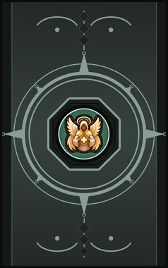
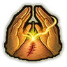
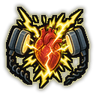
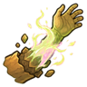

Technique trees › Medical
Medical ninjutsu
12 techniques in the Ninjutsu tab.
Every ninja can learn it, but only up to D rank. Higher ranks need a Medical Specialist build.

Healing Hands DCBAS
Chakra 15 to 55. Pour chakra into a wound and close it. Each rank heals more; from Moderate up it also stops bleeding.
Healing Hands DCBAS
Chakra 15 to 55. Pour chakra into a wound and close it. Each rank heals more; from Moderate up it also stops bleeding.
Pour chakra into a wound and close it. Each rank heals more; from Moderate up it also stops bleeding.
| Rank | Chakra | Cooldown | Class level |
|---|---|---|---|
| D | 15 | 10 s | 1 |
| C | 20 | 10 s | 4 |
| B | 30 | 10 s | 8 |
| A | 40 | 10 s | 12 |
| S | 55 | 10 s | 16 |
Healing Hands: Mass BAS
Chakra 40 to 80. Heal every ally within a few steps of the user at once.
Healing Hands: Mass BAS
Chakra 40 to 80. Heal every ally within a few steps of the user at once.
Heal every ally within a few steps of the user at once.
| Rank | Chakra | Cooldown | Class level |
|---|---|---|---|
| B | 40 | 1 hour | 9 |
| A | 60 | 1 hour | 14 |
| S | 80 | 1 hour | 18 |
Darts of Life B
Chakra 15. Little orbs of healing light circle the user; flick one at an ally up to 25 cells away to heal them.
Darts of Life B
Chakra 15. Little orbs of healing light circle the user; flick one at an ally up to 25 cells away to heal them.
Little orbs of healing light circle the user; flick one at an ally up to 25 cells away to heal them.
| Rank | Chakra | Cooldown | Class level |
|---|---|---|---|
| B | 15 | 5 s | 8 |
Regenerate CBAS
Chakra 20 to 60. Boost a patient's life energy so their wounds close by themselves for a while.
Regenerate CBAS
Chakra 20 to 60. Boost a patient's life energy so their wounds close by themselves for a while.
Boost a patient's life energy so their wounds close by themselves for a while.
| Rank | Chakra | Cooldown | Class level |
|---|---|---|---|
| C | 20 | 1 hour | 5 |
| B | 30 | 1 hour | 9 |
| A | 45 | 1 hour | 13 |
| S | 60 | 1 hour | 17 |
Cleanse DCBA
Chakra 10 to 50. Purify a patient. Wound: stops bleeding. Poison: draws out toxins and food poisoning. Disease: pushes back infections. Panacea: all of that, plus hangovers and withdrawal.
Cleanse DCBA
Chakra 10 to 50. Purify a patient. Wound: stops bleeding. Poison: draws out toxins and food poisoning. Disease: pushes back infections. Panacea: all of that, plus hangovers and withdrawal.
Purify a patient. Wound: stops bleeding. Poison: draws out toxins and food poisoning. Disease: pushes back infections. Panacea: all of that, plus hangovers and withdrawal.
| Rank | Chakra | Cooldown | Class level |
|---|---|---|---|
| D | 10 | 20 s | 2 |
| C | 20 | 20 s | 5 |
| B | 35 | 20 s | 10 |
| A | 50 | 20 s | 14 |
Ease Pain C
Chakra 15. Numb a patient's pain for about two hours.
Ease Pain C
Chakra 15. Numb a patient's pain for about two hours.
Numb a patient's pain for about two hours.
| Rank | Chakra | Cooldown | Class level |
|---|---|---|---|
| C | 15 | 20 s | 5 |

Force Resuscitation B
Chakra 35. Shock a downed patient's heart into pumping: stops their bleeding, restores some blood and heals a little.
Force Resuscitation B
Chakra 35. Shock a downed patient's heart into pumping: stops their bleeding, restores some blood and heals a little.
Shock a downed patient's heart into pumping: stops their bleeding, restores some blood and heals a little.
| Rank | Chakra | Cooldown | Class level |
|---|---|---|---|
| B | 35 | 1 hour | 9 |

Healing Hands: New Limb A
Chakra 80. Regrow a lost body part: the largest missing one first (an arm before a finger). Takes ten seconds of channelling and a day to recover.
Healing Hands: New Limb A
Chakra 80. Regrow a lost body part: the largest missing one first (an arm before a finger). Takes ten seconds of channelling and a day to recover.
Regrow a lost body part: the largest missing one first (an arm before a finger). Takes ten seconds of channelling and a day to recover.
| Rank | Chakra | Cooldown | Class level |
|---|---|---|---|
| A | 80 | 1 day | 14 |
Chakra Scalpel CBA
Chakra 20 to 30. Form a blade of chakra on the fingers for about an hour of fighting. Advanced and Sword ranks lengthen the blade.
Chakra Scalpel CBA
Chakra 20 to 30. Form a blade of chakra on the fingers for about an hour of fighting. Advanced and Sword ranks lengthen the blade.
Form a blade of chakra on the fingers for about an hour of fighting. Advanced and Sword ranks lengthen the blade.
| Rank | Chakra | Cooldown | Class level |
|---|---|---|---|
| C | 20 | 1 hour | 4 |
| B | 25 | 1 hour | 9 |
| A | 30 | 1 hour | 14 |
Derangement Palm B
Chakra 30. A chakra palm strike to the nerves: hurts, stuns briefly and leaves the target clumsy and slow for an hour.
Derangement Palm B
Chakra 30. A chakra palm strike to the nerves: hurts, stuns briefly and leaves the target clumsy and slow for an hour.
A chakra palm strike to the nerves: hurts, stuns briefly and leaves the target clumsy and slow for an hour.
| Rank | Chakra | Cooldown | Class level |
|---|---|---|---|
| B | 30 | 25 s | 10 |
Aura of Positive Energy A
Drains 0.72 chakra a second. While on, the user and allies within three cells heal a little every two seconds. Drains chakra.
Aura of Positive Energy A
Drains 0.72 chakra a second. While on, the user and allies within three cells heal a little every two seconds. Drains chakra.
While on, the user and allies within three cells heal a little every two seconds. Drains chakra.
| Rank | Chakra | Cooldown | Class level |
|---|---|---|---|
| A | 0.72/s while on | none | 15 |
Angel on the Battlefield S
Chakra 120. S-rank, Medical Specialists only. Bring someone back from the dead, if they died within the last hour.
Angel on the Battlefield S
Chakra 120. S-rank, Medical Specialists only. Bring someone back from the dead, if they died within the last hour.
S-rank, Medical Specialists only. Bring someone back from the dead, if they died within the last hour.
| Rank | Chakra | Cooldown | Class level |
|---|---|---|---|
| S | 120 | 2 days | 18 |
Chakra is the technique's base cost, the number in its def. In play it is multiplied by the pawn's chakra energy usage multiplier, which traits (chakra artificer 90%, volatile conduit 110%), World of Naruto genes and jutsu enhancements change, so the technique window can show a slightly different number for each ninja. Cooldowns are in-game time, as the technique window shows them, and the pawn's cooldown stat shortens or lengthens them. World of Naruto gives every ninja a base of 100 maximum chakra; genes and traits change it.